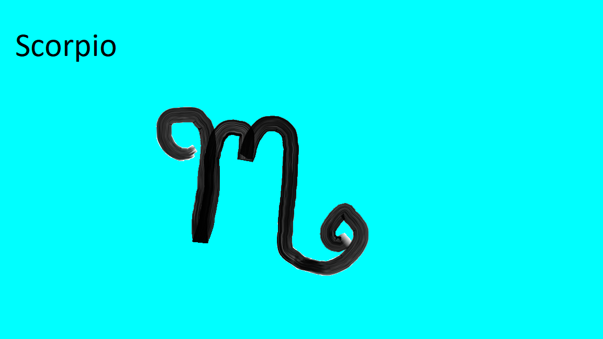

I'm 16 turning 17 Novemeber 10th. I was born in York, PA but the rest of my family was born in Puerto Rico.
I am in 11 grade but hopefully graduating in may 2024. It's a little dificult since I would have to do night school on top of work and actual school. At the end of the day it will be worth all the stress if that means I can graduate early. With the help of John and santiago.
I have multiple hobbies for example: I love playing video games. I love writing, doing word searches, and coding. I love going out for walks especially on trails.
When I graduate I want to get a full time job to start saving money for a car and to start saving for an apartment in the future.
